Don't fear failure, it's part of the process...
It wasn't always planned for this site to have a mascot. But wouldn't it be so cute and fun? Especially since I've never had one haha? And what followed was the most trouble I've ever had designing a character. Usually I have ideas stirring well before I put them to paper and the transition is smooth, but this girl... this stupid robot girl... ruined my life.
Below is a timeline of every point in Manila's development. Might as well share the experience and how I tried to balance self-indulgence (my needs) and legibility (others' needs).
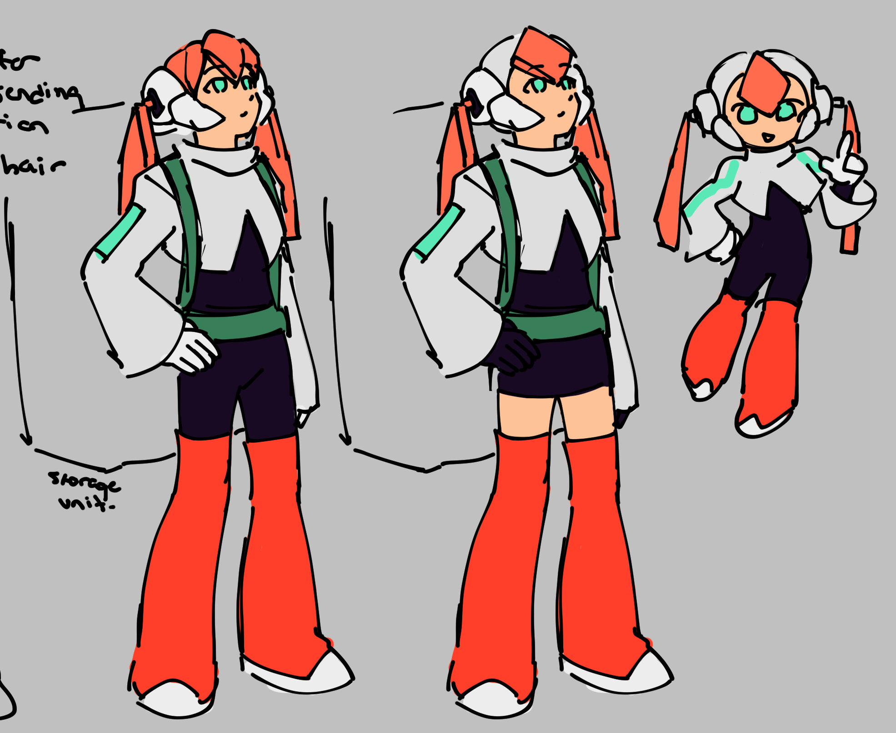
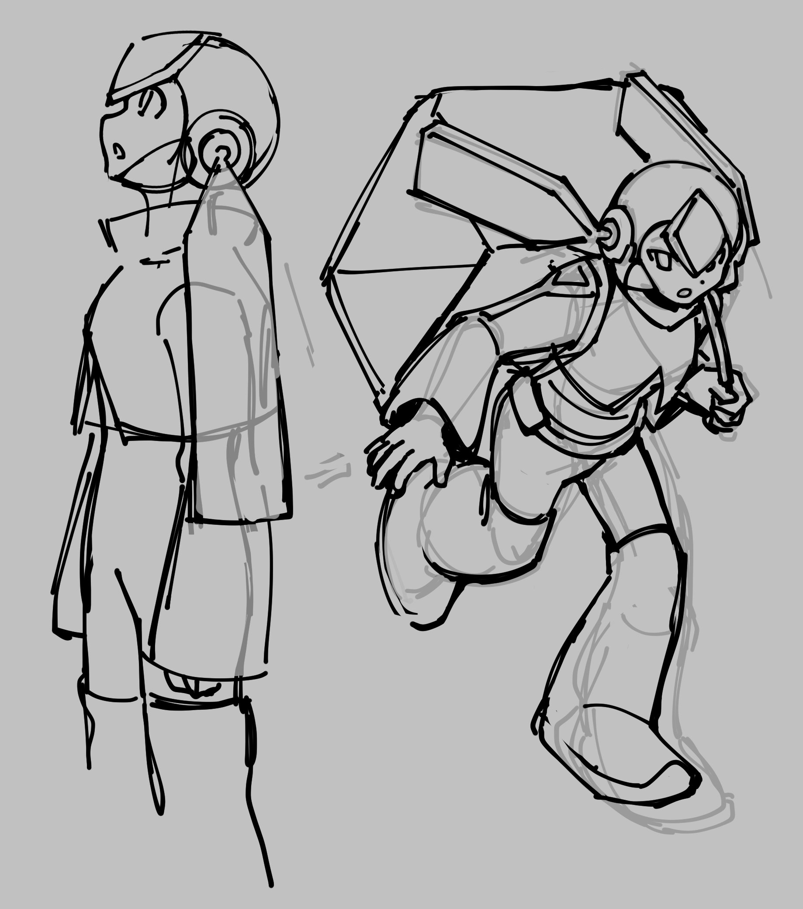
2/27/2023: First attempt. The website-based palette and basic "archivist" ideas were there, and the sparkling eyes would return a few times.
About the palette: The main site color is salmon/orange while mint was the previous version's. Mint was the better complementary color, but I used dark teal for some time.
6/18-21/2023: New approach, same palette. I was flipping through the Mega Man X Complete Works book those nights so she looks like a very smooth Reploid. The plastic sheets for hair recall Pandora, Prometheus, and others from Mega Man ZXA (Makoto Yabe). I humored her being a redhead, but thankfully it didn't work out.
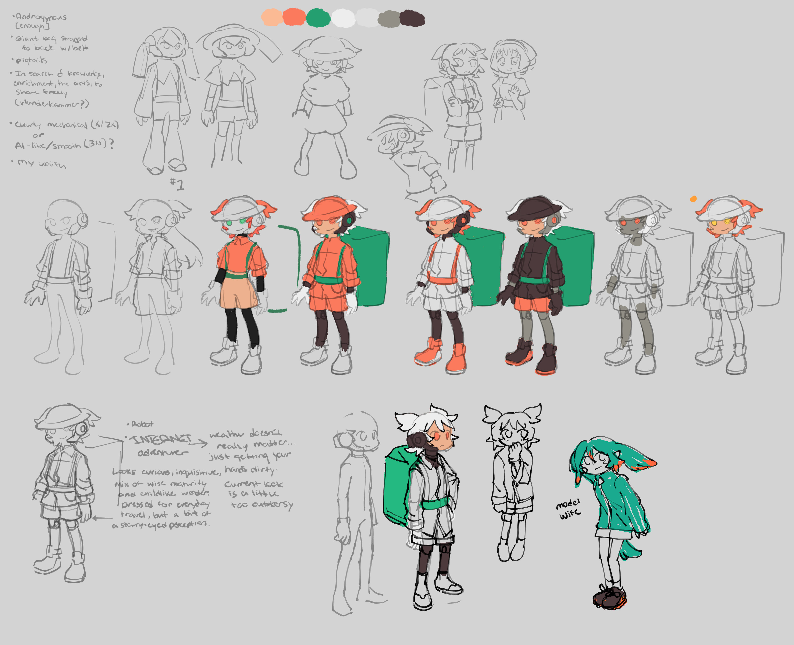
8/18/2023: After a new brainstorming session, Manila adopted an overly literal "internet explorer" look. Even then, I noted it was "too outdoorsy." She looks a deal younger due to the thin limbs, oversized clothing, and cutesy pigtails. Took the time to try some other palettes too. I couldn't stand the white hair for long because it just looked like Specter from Ape Escape. Also features Leche and model wife Elfilin.
Two small successes here, though, in the shoes and exposed knee joints. Both appear in that colored sketch to Elfilin's left. It depends on the purpose of the character, but I believe good humanoid designs include an element of intrigue. For example, something on their person or part of their body that is concealed through layering, or visible but suggests something about their interests, past, or demeanor... those kinds of choices are deeply personal. Asymmetry, when it fits, is also a plus.
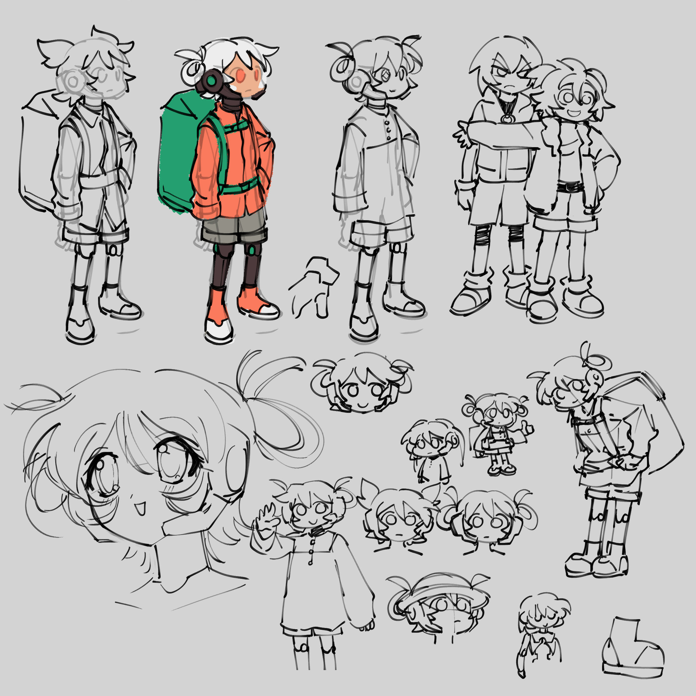
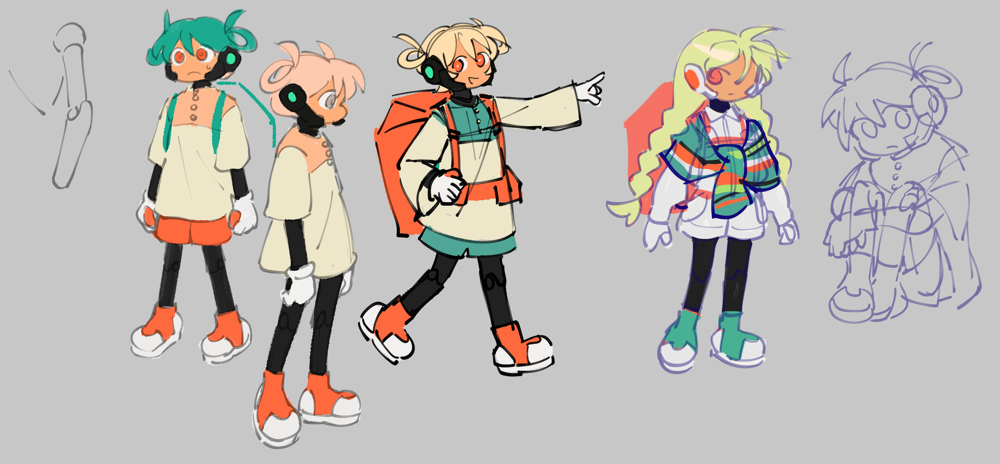
9/1 and 9/5/2023: No idea what I wanted at this point. Lost any balance of 'legible' and 'self-indulgent' I had going earlier. The shoes stuck, and for a time, so did the braids... also a sketch of Tip's Sonic and Tails gis is there. November 2023 - January 2024: Braids era
I had a random thought like, "I never give my characters braids despite liking them so much," and gave them a try. I still like this hairstyle, just not for the current iteration of Manila. I think my fondness stems from how my long hair was braided as a child.
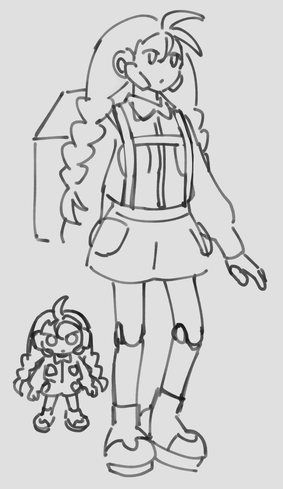
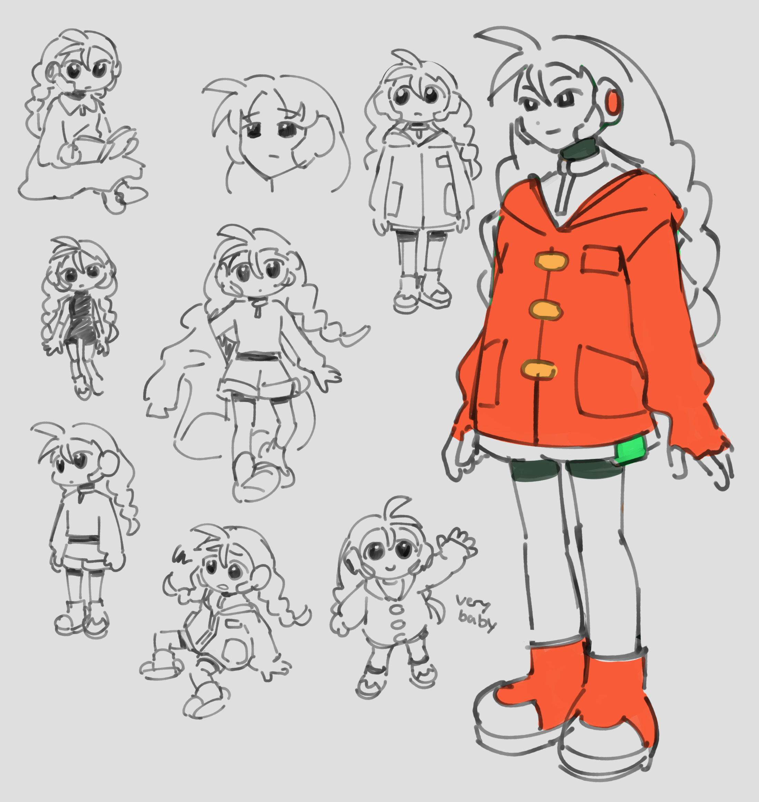
11/2 to 11/9/2023: Big green braids, big orange shoes, and a big orange jacket. The CD-sized pockets made their debut here. With or without the joints, she looked more like a citizen of a cyber-themed city. The moe slice-of-life doodles said that much. My next problem: how could I make her look a little more responsible?
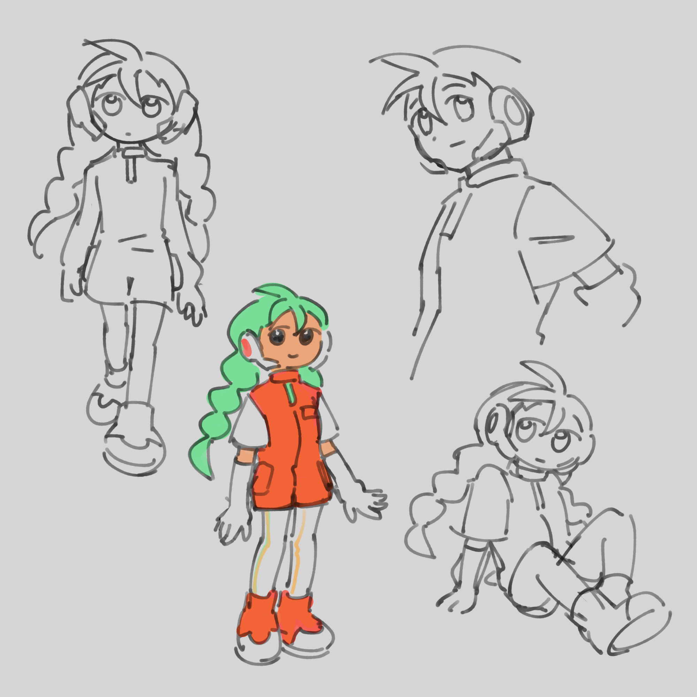
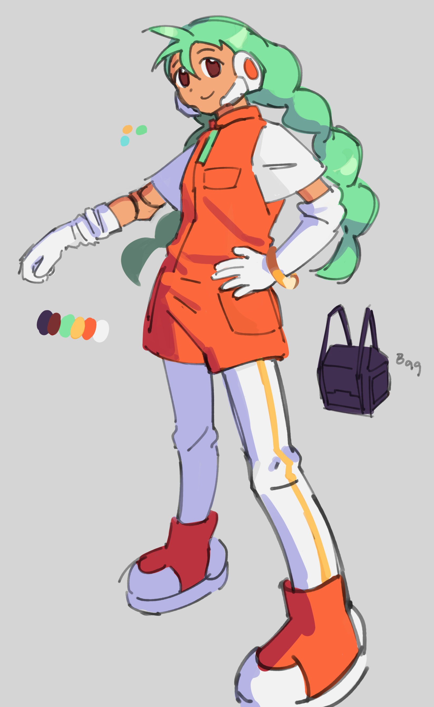
11/16/2023: My answer was a Navigator/race queen hybrid. Sports a bright fruity palette (self-indulgent), but wears something more like a uniform with repeating elements and symmetry (legible). I clearly remember doodling that little chibi in the first image and thinking, "This is it. This is what I wanted!!!" The yellow stripe on the leggings and gold bracelet were just to have an accent color. The long gloves were for intrigue and to push the idea that Manila keeps her hands clean.
About the palette 2: At this point it was fairly removed from the website palette, but I figured the orange uniform was enough to suggest affiliation. The green/yellow/white/orange combo was influenced by the items I was using on Gaia Online at the time, namely Fruity and Sour items. I don't know if anyone else on Earth likes them.

Somehow, the giant bag accessory made it this far. I couldn't imagine drawing it over and over, let alone others, so it was scrapped.
11/19/2023: Named her Manila after the Manila mango (carabao) grown in the Phillippines. Organic name, mechanical being, and I love food names.
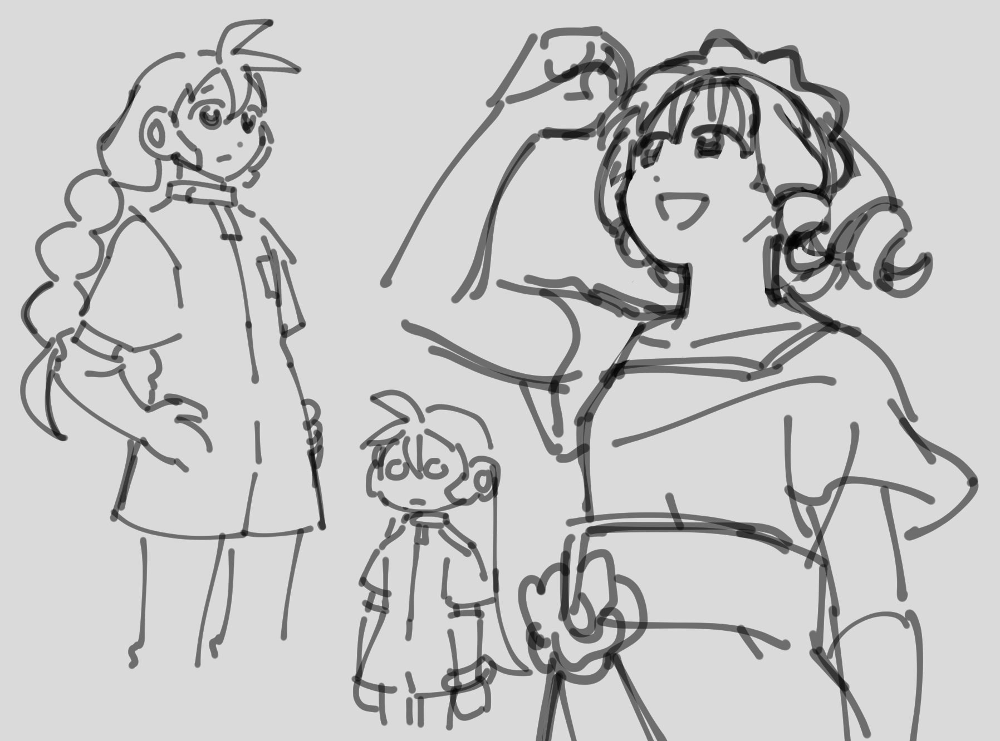
1/30/2024: Last doodle before my last semester of university began, though I continued to scribble her on paper scraps. One such paper scrap sparked a huge change.
5/7/2024: While absentmindedly doodling Manila after a morning class, I made a decision that would forever change her future. Read the paper from left to right.
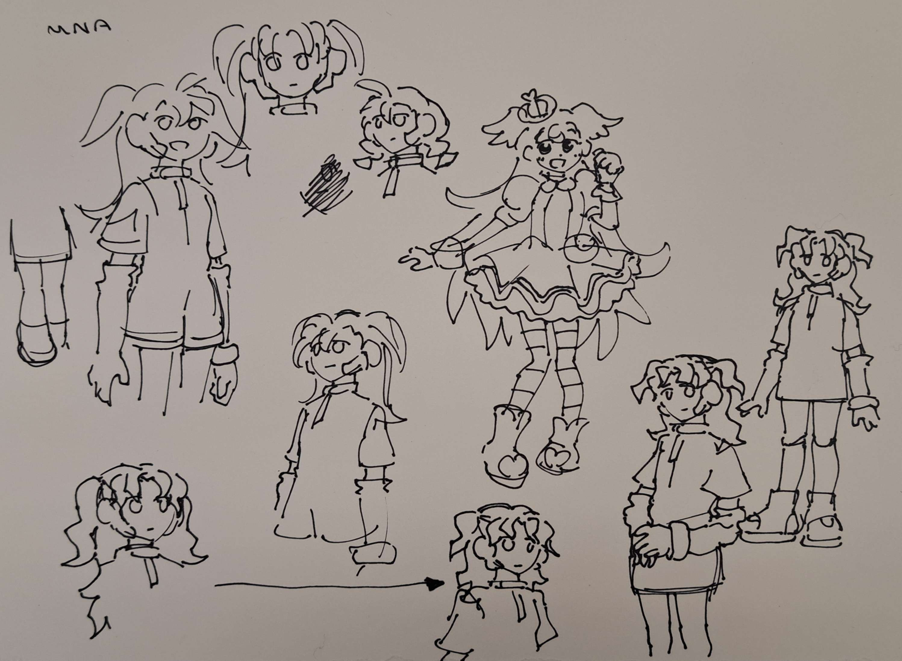
I swear to god Komugi was the last thing I drew on the paper, and from memory to boot. But it's obvious I was thinking of her subconsciously prior to drawing Manila and that in turn influenced her. It's peak self-indulgence given that hairstyle is associated with cute peppy girls, but let's say she's just tying a bit of it back and out of her face.
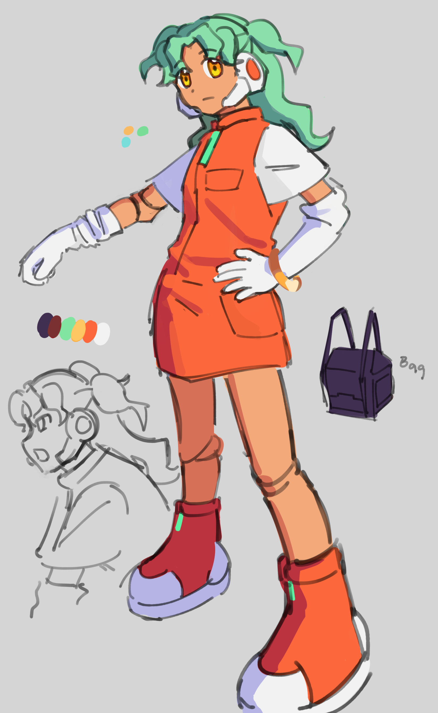
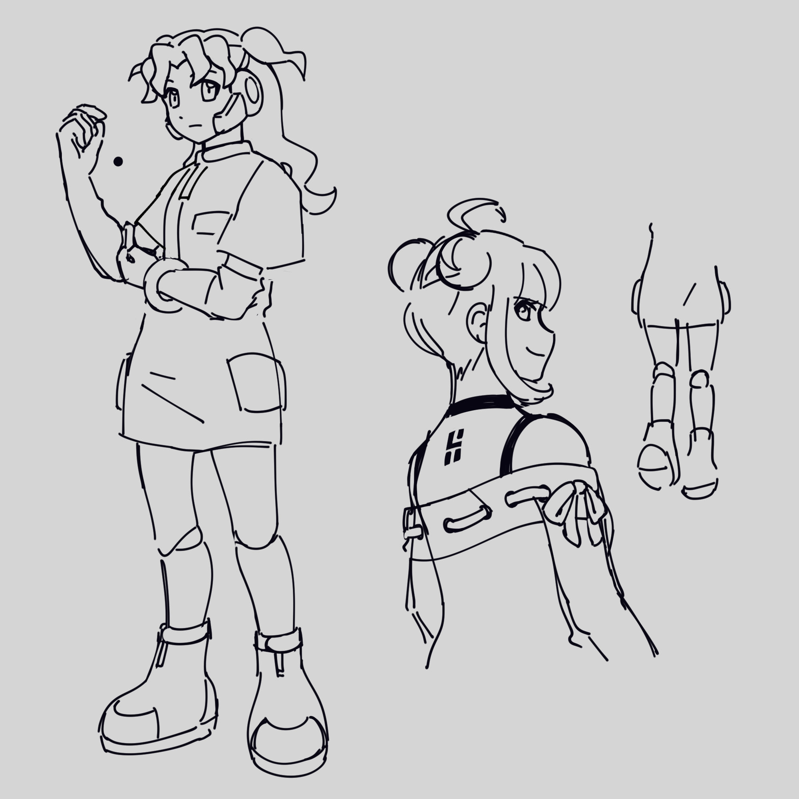
5/7 and 5/11/2024: Committed to the hairstyle digitally and drafted her new key art. The BJD joints were unchanged from the earlier braids design; I made it a point to elaborate on them in her reference sheet.
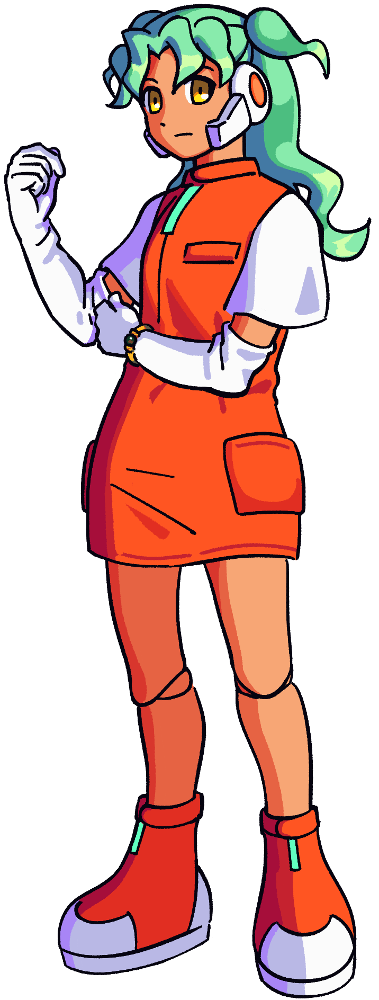
8/11/2024: Finally changed the bracelet design on the sheet and key art. When I showed the May drafts to my brother, he mentioned the bracelet looked like a Sonic ring. And I mean... yeah. I settled on an organic pearl to contrast from the rest of her clothes, which don't resemble anything from the real world.
And so ends Manila's perilous journey... kinda... now she needs to appear on other pages. But thanks for reading.
Back...